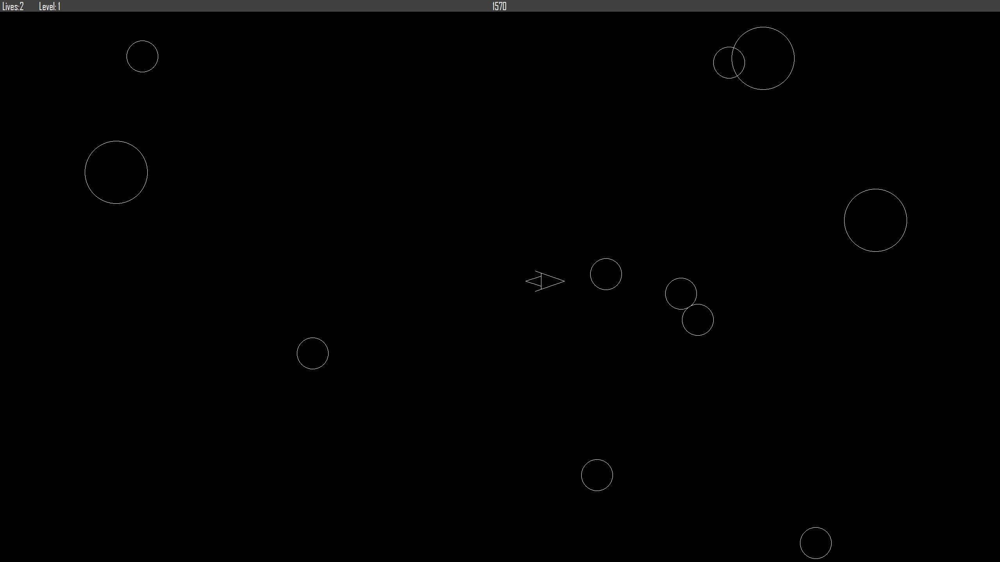

Asteroids Replica
(C#, Windows Forms)
A clone of the arcade game Asteroids. This began as a school project, to which I added additional features such as working sound and a leaderboard. My objective during the creation of this replica was to make it as close to the original as possible. This entire game was made from scratch, with no external libraries for game design used.

Reticle Painter for Escape From Tarkov
(Python)
I have played the game Escape from Tarkov, a realistic First Person Shooter, for several years. I frequently use tools like Tarkov Ballistics to calculate the ballistic drop for weapons in game. However, I sometimes found it difficult to properly utilize these results in game: While the ballistic results are accurate, the reticles of in game scopes are not correctly scaled. To help with this issue, I made a simple Python application to properly scale scope reticles and generate a reference image showing where the player needs to aim for certain distances.

As the program works currently, the user needs to enter their information into the calcualtor online, download the HTML file, and the program then parses the needed information from the HTML file. This was done as a temporary solution in anticipation for Tarkov Ballistics to publicly release their API. However, the API has yet to be released. Current plans to improve this program include utilizing the Selenium Python library to automatically populate the ballistic calculator and retrieve needed data.
SQL Password Manager
(SQL, C#, Windows Forms)
My first personal project was a password manager using Python. This project is a continutation on what I have learned. The front end is being created with Windows Forms. This will communicate with a SQL backend to securely store credentials on a remote server. The goal with this program is to create a simple, but secure password manager that is available to access from multiple devices.